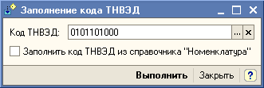

Конфигурация "1С-Рейтинг: Налоговый мониторинг".
Обработка «Групповая обработка объектов мониторинга» предназначена для группового заполнения регистра сведений.
ВНИМАНИЕ!!!
Изменения выполненные обработкой являются необратимыми. Рекомендуется перед использованием обработки сделать архивную копию информационной базы.
В области «Отбор» указывается справочник по данным которого необходимо заполнить регистр. При необходимости можно задать отбор по значениям реквизитов.
После определения справочника и отбора значениям его реквизитов, нажатием на кнопку «Отобрать» формируется таблица элементов с колонками "Ссылка" (ссылка на элемент справочника) и "КодТНВЭД" (Код ТНВЭД, установленный в регистре сведений "Объекты мониторинга" для данного элемента справочника - объекта МОП), удовлетворяющих условиям отбора. Напротив каждого элемента можно установить/снять пометку, обрабатываться будут только отмеченные.
Кнопка «Заполнить код ТНВЭД» предназначена для автоматизированного заполнения колонка "Код ТНВЭД". При нажатии на кнопку «Заполнить код ТНВЭД» откроется форма, где указываются условия автоматизированного заполнения:

В поле "Код ТНВЭД" выбирается элемент справочника "Классификатор кодов ТНВЭД". При нажатии на кнопку "Выполнить", выбранный код будет установлен в колонке "Код ТНВЭД"для всех отобранных элементов.
Если установлен флажок "Заполнить код ТНВЭД из справочника "Номенклатура"", при нажатии на кнопку "Выполнить", колонка "Код ТНВЭД" будет заполнена по значениями реквизита "Код ТНВЭД" отобранных элементов справочника "Номенклатура". Флажок доступен только в том случае, если в качестве источника заполнения выбран справочник "Номенклатура".
Для отобранных элементов необходимо выбрать одно из следующих действий:
При нажатии на кнопку «Выполнить» выполняется выбранное действие.
Если в качестве источника данных для заполенния выбран справочник "Номенклатура", доступна установка флажка "Установить Код ТНВЭД в справочнике". Если данный флажок установлен, при нажатии на кнопку "Выполнить" для выбранных элементов справочника "Номенклатура" будет выполнено заполнение значений реквизита "Код ТНВЭД" по данным из колонки "Код ТНВЭД".